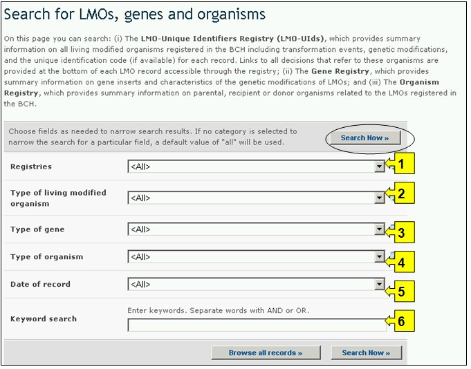
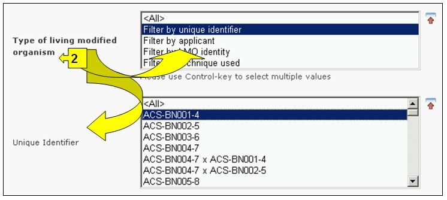
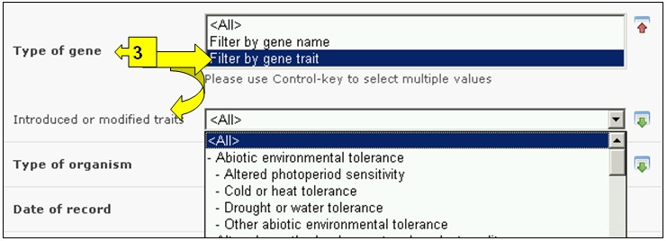
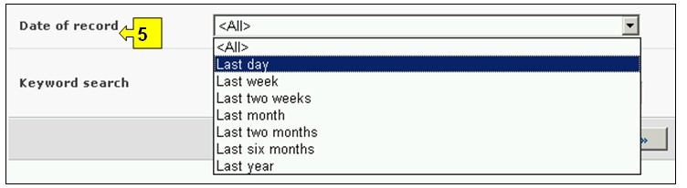

可通过导航工具条上的查询信息下拉菜单上的链接、或通过查询信息页面左侧菜单中的链接或同一页面上关于改性活生物体、基因和生物体的文字介绍中的链接进入搜索改性活生物体、基因和生物体的界面。
在搜索改性活生物体、基因和生物体页面，用户可搜索有关下列方面的信息：
1. 改性活生物体独特识别码登记库，该登记库提供了在生物安全信息交换所登记的所有改性活生物体的信息概要，包括转化事件、基因改变及每一个记录条的独特识别码（若有的话）。通过每一项改性活生物体纪录条中提供的工具条获取所有涉及这些生物体的决定和风险评估；
2. 基因登记库，该登记库提供有关改性活生物体的基因成分和基因改动特点的信息概要；
3. 生物体登记库，该登记库提供与生物安全信息交换所中登记的改性活生物体有关的亲本、受体或供体生物体的信息概要。
在 搜索改性活生物体、基因和生物体 页面上有六个搜索标准框，可用于对该数据库中的搜索进行进一步限定。每一个搜索标准框均有一个下拉式菜单，用于选择所需的标准。每一个下拉菜单的缺省设置是菜单列表顶端的第一个选项。在每一个方框的右侧有一个按钮，使用户可以启动多重选择。一旦进入多重选择模式，可在按住Ctrl（控制）键的同时点击有关标准从而在选择中添加更多标准。

图 46
在本数据库中提供了六个搜索标准框，用于对搜索进行限定。
方框1[登记库]列出了现有的三个登记库:改性活生物体、基因和亲本或供体生物体

图 47
方框2[改性活生物体类型]使用户可对改性活生物体的不同方面运用过滤器，进一步将搜索限定在与所选定的具体标准有关的记录条范围。可供选用的筛选过滤器类别如下：(一) 改性活生物体，通常通过一个独特识别码（如 MONØØ81Ø-6)进行识别, (二) 引进或被改动的特性（如抗草甘霖除草剂）， （三) 基因名（如 Cry1A(b)), (四) 所使用的工艺（如以土壤杆菌为媒介） ,(五) 亲本生物体常见名（如Maize（玉米））, (六) 亲本生物体学名（如Zea mays（玉米）) 或 (七) 申请人（自由输入文字，如 Monsanto（孟山都）)。
在下拉菜单中选择一个或多个过滤器标准会打开更多具有下拉菜单式选项的搜索方框，与所选的过滤器一一对应。可添加多重过滤器，方法是使用Ctrl （控制）键（即在按下Ctrl （控制）键的同时点击有关过滤器标准）。

图 48
方框3[基因类型]使用户可对一个基因名称和/或一个基因特征运用过滤器，进一步将搜索限定在与所选定的具体标准有关的记录条范围。
在下拉菜单中选择一个或多个过滤器标准会打开更多具有下拉菜单式选项的搜索方框，与所选的过滤器一一对应。可添加多重过滤器，方法是使用Ctrl （控制）键（即在按下Ctrl （控制）键的同时点击有关过滤器标准）。

图 49
方框4[生物体类型]使用户可对生物体的常用名和/或学名运用过滤器，进一步将搜索限定在与所选定的具体标准有关的记录条范围。
在下拉菜单中选择一个或多个过滤器标准会打开更多具有下拉菜单式选项的搜索方框，与所选的过滤器一一对应。可添加多重过滤器，方法是使用Ctrl （控制）键（即在按下Ctrl （控制）键的同时点击有关过滤器标准）。

图 50
方框5[记录日期]允许用户根据数据纪录条在生物安全信息交换所登记的日期限定搜索范围。下拉菜单提供了若干个选项，可将搜索限定在某一选定时间间隔（如前一天、上个月、去年等）内提交的纪录条。

图 51
方框6[关键词搜索]提供了使用关键词对搜索进行限定的机会。用户可使用标准关键词句法（结合使用“和/或”）搜索多个词或词的核心部分（如“进口或出口”）。使用关键词进行的搜索结果只显示含有与被搜索文字完全一样的纪录条而不会包含未输入的同义词（例如，只用一个关键词“Maize”(玉米)进行搜索的结果包括含有“Maize”的纪录条而不包括含有“Corn”或”Zea mays”（玉米同义词）的纪录条。

图 52
搜索页提供了三个按键用于生成查询结果。 键（搜索界面的顶端和底部均有）使用户根据在搜索功能方框中选择的搜索标准启动搜索。搜索结果缺省设置为根据国家名字母顺序排列。 (位于搜索界面的底部)使用户可获得本数据库中所有记录条的列表。

图 53
搜索结果 页位于纪录条上方，具有对搜索结果进行排列的功能。这可用于根据针对具体信息类型的标准对纪录条进行排列。注意当用户选择不同的搜索标准时，排列标准也随之变化。

图 54
示例：用户希望查找巴斯夫（BASF）公司生产的改进植酶酸降解的所有双低油菜改性。用户：（一）在改性活生物体类型方框中选择按申请者过滤，并在申请人方框中键入BASF；（二）然后在基因类型方框中选择按特性过滤并在引入或改动特性方框中选择植酸酶降解；并（三）在生物体类型方框中选择按常用名过滤并在亲本生物体方框中选择油菜籽。
点击，搜索结果以纪录条列表的形式显示。可通过选择纪录条标题查看每一个改性活生物体的详细信息。

图 55

图 56